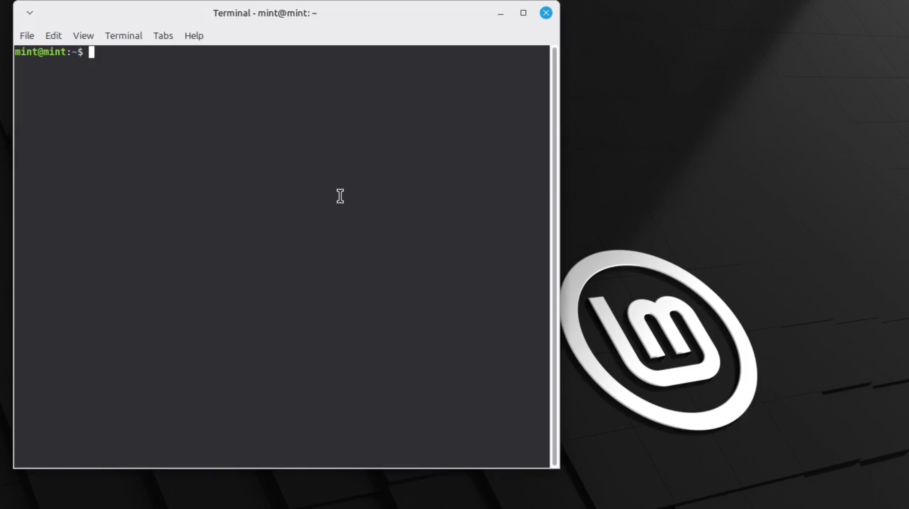
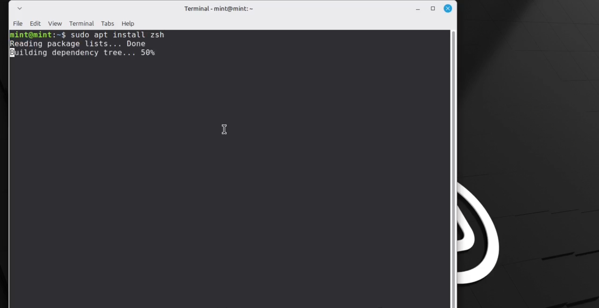
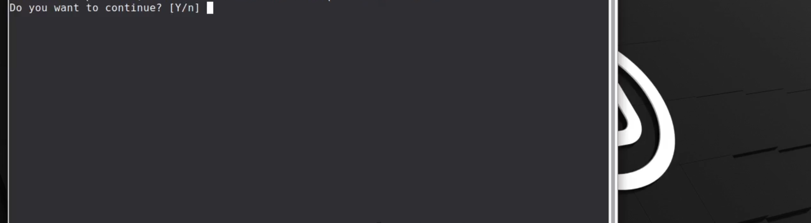
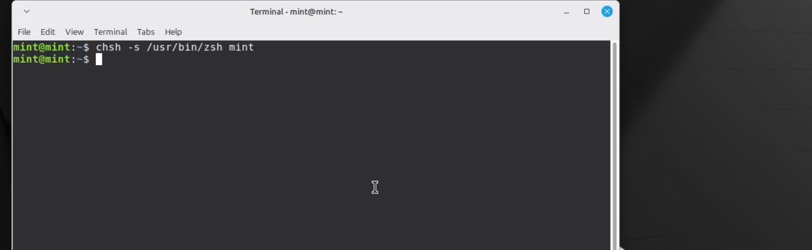
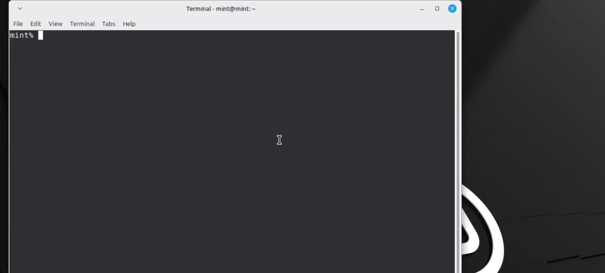

how to change your default shell to zsh in linux
In this guide or tutorial I will show you how to change your default shell to zsh

STEP1:
open your terminal

STEP2:
type
$sudo apt install zsh

STEP3:
Enter "Y"

STEP4:
After installation type
$sudo chsh -s /usr/bin/zsh <username>

STEP5:
Restart your pc
